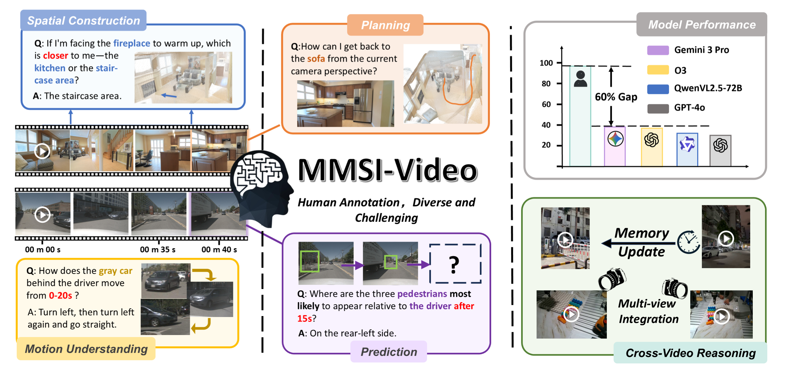
MMSI-Video-BenchTeaser
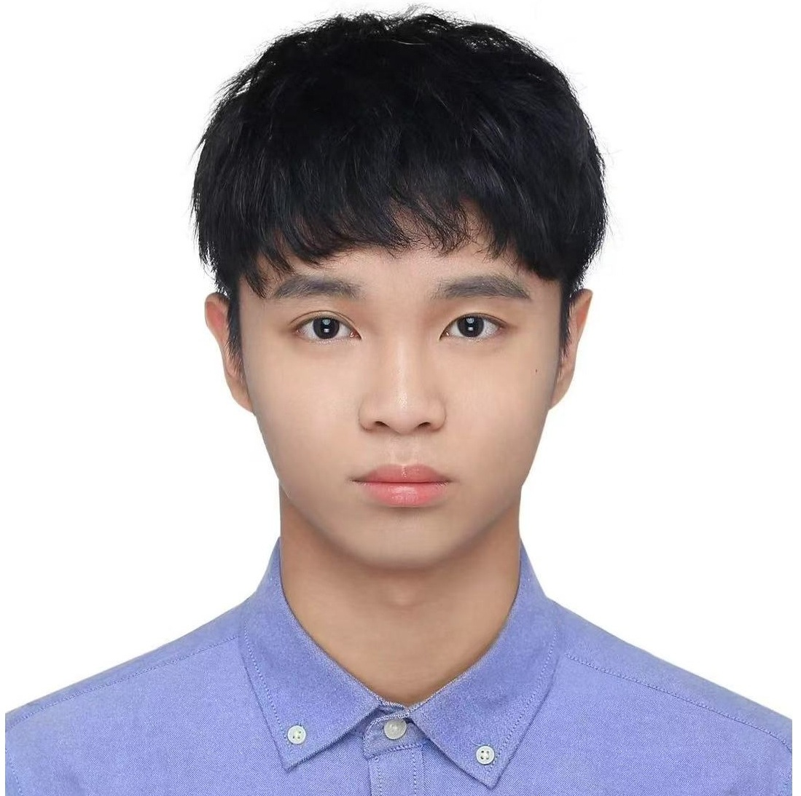
Incoming Ph.D. student at The University of Hong Kong, joining MMLab in Dec. 2026 under the supervision of Prof. Xihui Liu. My research focuses on embodied AI, 3D perception, spatial reasoning, and world models.
My research interests lie in Embodied AI, 3D Vision, Spatial Reasoning, and World Models. I study 3D scene understanding and spatial perception, construct and evaluate spatial reasoning benchmarks, and explore the design and training of spatial intelligence foundation models. My goal is to enhance the spatial cognition, reasoning, and decision-making capabilities of multimodal large models in complex 3D environments.
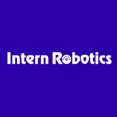
SAIL
MMSI-Video-Bench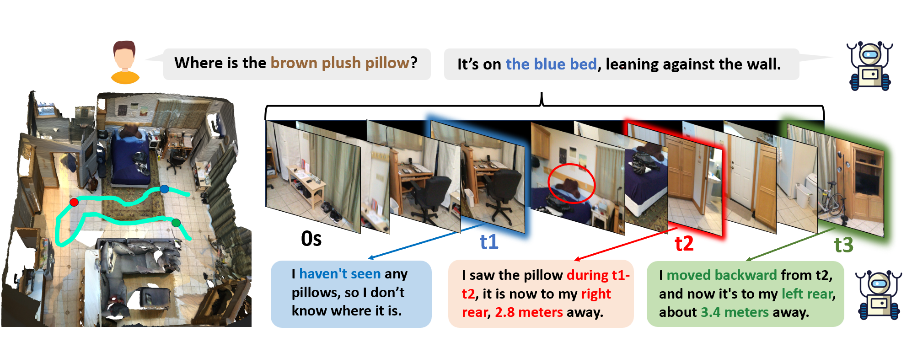
OST-Bench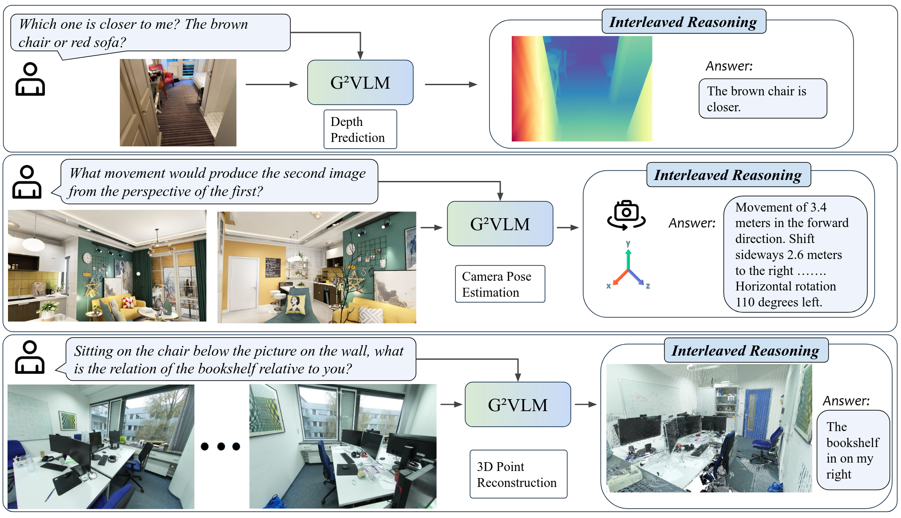
G²VLM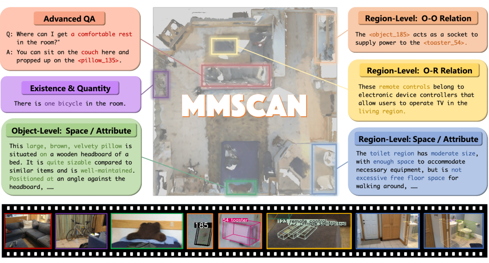
MMScan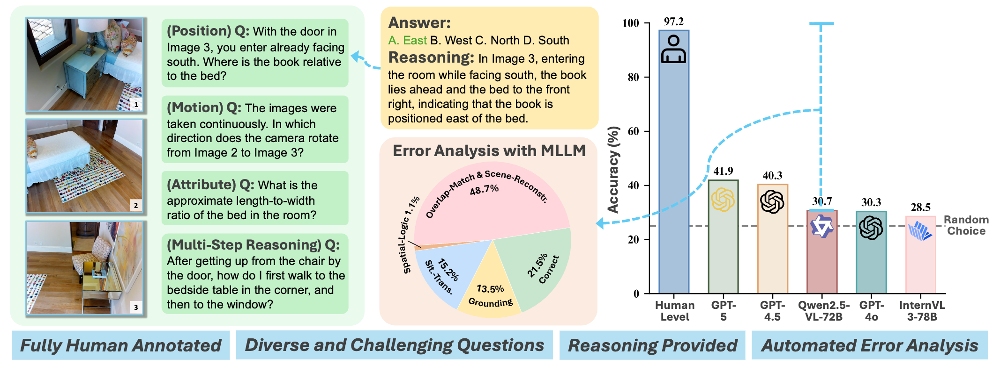
MMSI-Bench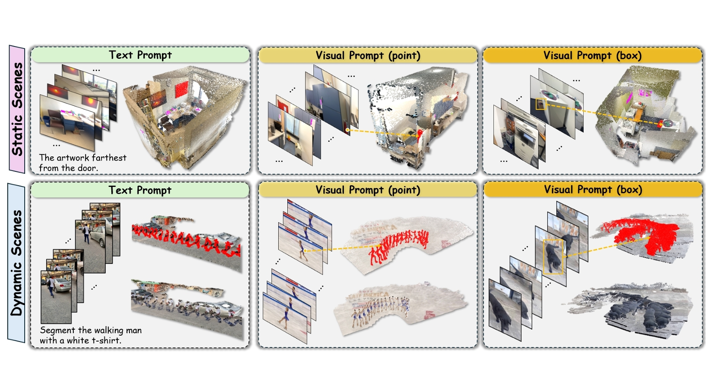
G2TAM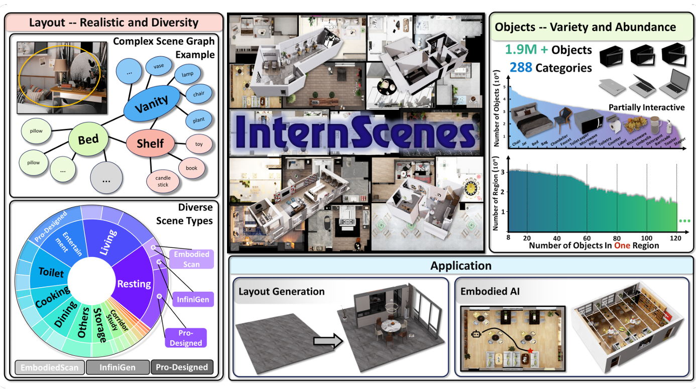
InternScenes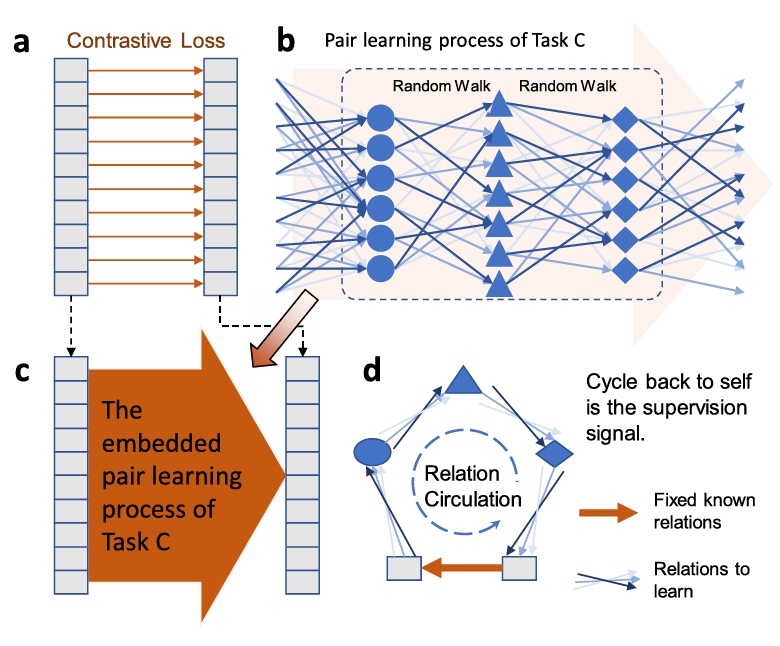
Auto-Pairing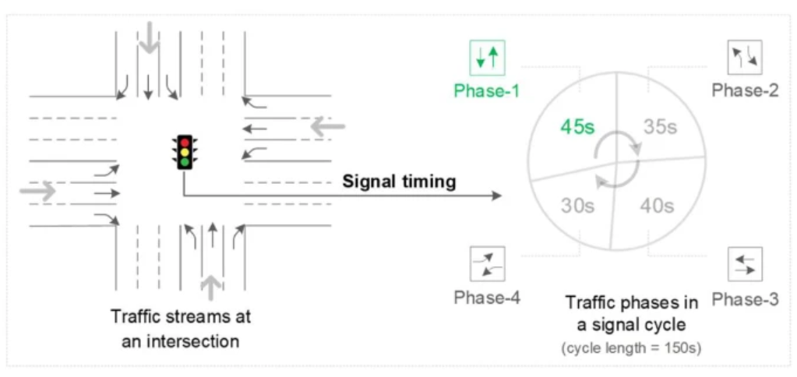
Traffic SignalShanghai Jiao Tong University
Shanghai Jiao Tong University
Shanghai Jiao Tong University
Contemporary Undergraduate Mathematical Contest in Modeling